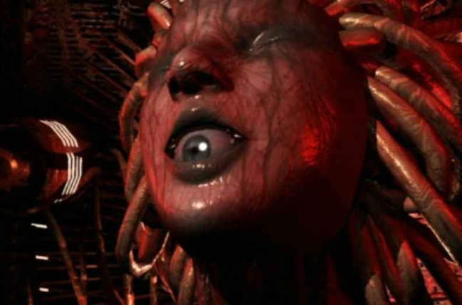

Movie review by : SFAM
Year : 2004
Directed by : Masahiko Maesawa
Written by : Chinfa Kang
Degree of Cyberpunk visuals : Medium
Correlation to Cyberpunk themes : Low
Rating : 3/10

Overview: Galerians Rion is a a low-quality animation - meaning video game quality with a semi-coherent story. Unfortunately, the story too plays like a video game. The star of the video game is a boy named Rion, who wakes up in a bizarre dystopic version of his former world. It turns out that this crazed supercomputer named Dorothy is attempting to become a God and only Rion can stop her. To do so, he needs to find his sister Lilia, who, along with Rion, has been given a virus that combined, can destroy Dorothy. As most RPGs, Rion's powers grow as he fights the Galerians that Dorothy throws up to block his journey to finding his sister. You can tell the end of the segment, because, um, Rion fights a boss character. Yes, you really are watching someone play a video game here!
The Bottom Line: While I am impressed that Maesawa was able to produce an anime on such a limited budget (I'm guessing a game environment was used to make most of the visuals other than Dorothy), they just aren't good enough to make for compelling viewing. The visuals are rather fascinating in places - Dorothy (see above) is pretty cool for instance - and certainly are cyberpunk, as is the story, but there just isn't enough here, either in story or visuals to make this worth recommending. I will give it a point for attempting to do a full scale anime without a budget.